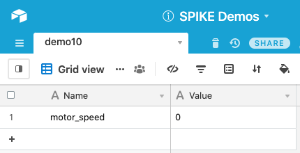
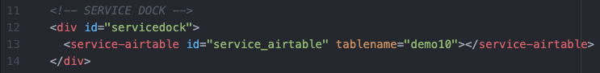
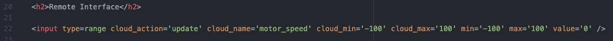
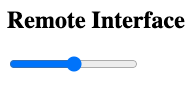
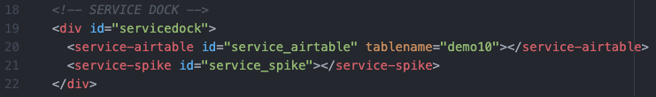
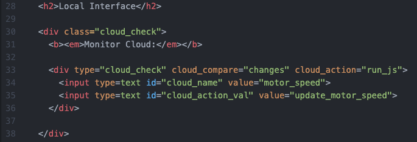
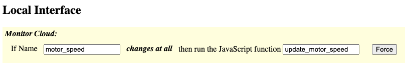
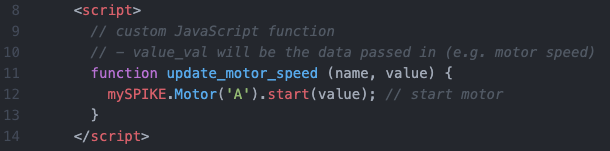

This demo shows how to use custom JavaScript functions for controlling the SPIKE Prime.
Be sure to view the overall Documentation for configuring the cloud storage (API key, Base ID, etc) and for more information on how the entire system works.
This is the same setup as the Range Slider demo. The "Name" column has an entry "motor_speed" that will hold the updated values from the Range Slider.

Service Dock
The remote page has the Airtable Service Dock element. Make sure to update the tablename attribute to match your table name.
Remote Interface
The slider will change the cloud value of motor_speed every time it changes.
See the Range Slider demo for more information about the slider functionality.
This is how the range slider and form will look on the Remote Page:

Service Dock
The local page has both the Airtable Service Dock element (make sure to update the tablename attribute to match your table name). There is also a single SPIKE Prime Service Dock element.
Local Interface
The local page is monitoring the motor_speed value. Any time it changes it'll call a local JavaScript function called "update_motor_speed". This is because the "cloud_action" value is "run_js" (which means to run the JavaScript function specified in the "cloud_action_val" field).
This is how the element will look on the Local Page:
This is what the local JavaScript function looks like. It is located within the "head" tag of the HTML page.
The JavaScript function will receive the name of the field (here: motor_speed) as well as the current value (whatever value is in the cloud). In this code, the name is ignored (not used) and the SPIKE Prime's motor is started (based on the motor_speed).
The advantage of this is that it doesn't change/affect any Slots and also happens faster.
Full documentation on available SPIKE Prime JavaScript functions is here: https://tuftsceeo.github.io/SPIKE-Web-Interface/
